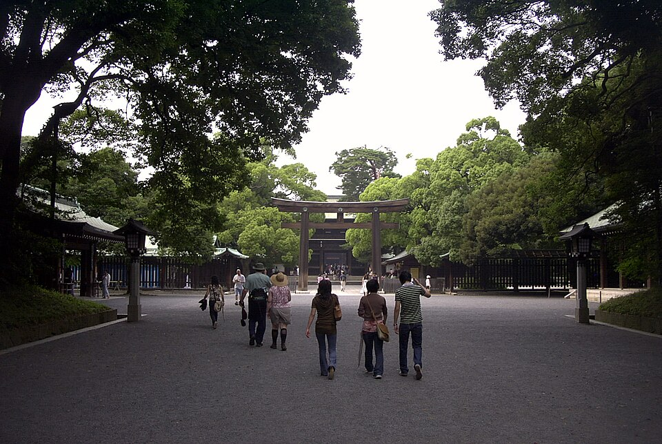

Photo credit: Ian G Shingler, CC BY-SA 4.0; Kakidai, CC BY-SA 3.0 (Wikimedia Commons)
Asakusa, Sumida and Skytree approach
A · Strongest fitTokyo's old-town walk: Kaminarimon gate, Nakamise street, the Sumida River bridge and views of Tokyo Skytree. Shops, river and landmarks in one easy route.
Route: Start Kaminarimon → Nakamise → Sensoji forecourt → Shin-Nakamise/Rokku shopping streets → Azumabashi Bridge → east-bank Sumida Park → Tokyo Mizumachi → finish Oshiage Station/Skytree Town. This is a street-and-river walk, not a tower visit or boat ride.
Main tradeoff: Temple crowds, breezy river.
Why it ranks here: The best low-cost combination of recognizable Tokyo, active shopping streets, and open riverside views.
Memory overlap: Kimono rental and stroll in Asakusa (same area; now researched in iteration 2). The rank was reviewed against it and left as is.
More details and sources
- Traveler evidence
- Stuart describes souvenir-shopping energy, Sensoji congestion and riverside relief. The independent Tokyo podcast also features Sensoji. Wanderlog's Google-labelled 92,016 counter supports Sensoji's mainstream popularity, not approval of this entire route. [S53]
- Location and access
- Asakusa's Ginza/Asakusa/Tobu stations serve the start; Oshiage serves the finish. Stop at Asakusa instead if the river is unpleasant.
- Time and physical effort
- Approximately 4-5 km, 2.5-4 hours; predominantly flat, with bridge ramps and occasional steps. No hiking terrain.
- Approximate cost
- Free walking and temple forecourt; allow 400-800 for Tokyo access. Shopping and tower admission are additional, not necessary.
- Crowds and booking
- No reservation. Parallel shopping streets avoid fashionable-stall queues; the temple approach remains busy even on weekdays.
- Late-November / early-December fit
- Good daylight walk with commercial areas afterward. Nakamise shops need not stay open as late.
- Safety and constraints
- Riverside wind, wet paving and bicycles merit attention. Use signed toilets at visitor facilities, temple/park areas and open retail complexes.
- Uncertainty / what to verify
- Riverside works, shop hours and particular station exits; no promise that every waterfront segment is open.
- Sources
- Traveler/editorial: S01, S24. Official access: S02. Venue volume only: S53.